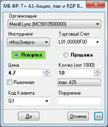
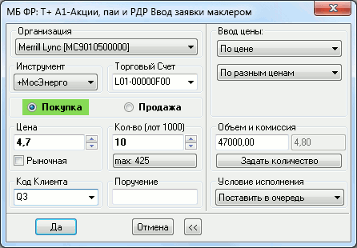

Маклерская заявка
Назначение
Маклерская заявка - специальный вид транзакций, используемый в случае, когда
один сервер QUIK используется несколькими участниками торгов для подключения к
торговым системам бирж. Маклерская заявка позволяет указать код участника торгов
непосредственно при вводе поручений из числа брокеров, использующих данный
сервер QUIK.
Работа с маклерскими заявками требует наличия на сервере
специальной лицензии на использование мультиброкерских рабочих мест и настройки
прав пользователя для работы с ними.
Открытие окна «Ввод маклерской заявки» осуществляется:
- Из Таблицы текущих торгов, Таблицы котировок, Таблицы заявок, Таблицы
сделок, Таблицы «Купить/Продать» выполнением следующих действий:
- нажатием кнопки на панели инструментов;
- двойным нажатием левой кнопки мыши. Из Таблицы текущих торгов подать
заявку таким образом не получится, так как при выполнении этого действия
откроется Окно котировок;
- нажатием клавиши «F2»;
- выбором в таблице пункта контекстного меню «Новая заявка» или пункта меню программы Действия/Новая заявка;
- Использованием Общего способа выполнения транзакций с выбором операции
«Ввод маклерской заявки».
Ввод маклерской заявки
Окно в зависимости от настроек может иметь компактную (слева) или полную (справа) форму. Вид окна переключается нажатием кнопки«>>». Формы оптимизированы для легкого и быстрого ввода параметров и компактного расположения на экране.

Заполнение формы заявки:
- «Организация» - идентификатор фирмы-участника торгов, от имени которой подана заявка. Заполняется автоматически, если указан «Код клиента».
- «Инструмент» - выбор инструмента из списка
инструментов данного класса. Чтобы найти инструмент в списке, наберите с клавиатуры
первые буквы его наименования (контекстный поиск в выпадающих списках
включается в меню Система/Настройки/Основные настройки..., раздел «Программа»).
- «Торговый счет» - код торгового счета, в отношении которого подается заявка (регистр символов имеет
значение). Если за пользователем закреплен один счет, то поле заполнится
автоматически. Если доступны несколько счетов, потребуется выбрать нужный счет
из списка или воспользоваться настройкой «Указывать счет депо по коду клиента»
(см. Настройки ввода заявки). О настройке
последовательности счетов в списке см. Настройка
счетов.
- «Покупка» / «Продажа» - направление операции.
- «Цена» - цена заявки, за одну единицу финансового
инструмента. При установке флажка в поле «Рыночная» заявка выставляется по
рыночной цене. При отключении признака «Рыночная» в поле автоматически
подставляется значение цены, указанное в данном поле
до включения признака «Рыночная». При смене инструмента запомненное значение сбрасывается.
При выборе в рамке «Ввод цены» значения «По средневзвешенной цене» поле «Цена» и признак «Рыночная» становятся неактивными (серыми).
- «Количество» - количество инструментов в заявке. Поле
недоступно для заполнения при подаче рыночной заявки на покупку на аукцион периода закрытия.
- «Код клиента» - идентификатор клиента в системе QUIK.
- «Поручение» - номер поручения.
Дополнительные параметры:
- «Ввод цены»:
- Выбор значения в поле «Цена»:
- «По цене» – исполнение заявки при наличии в торговой системе встречных
заявок с аналогичной ценой исполнения.
- «По доходности» – исполнение при наличии встречных
заявок с аналогичной доходностью, рассчитанной по цене заявки (для
облигаций).
- «По средневзвешенной цене» – в качестве цены принимается
средневзвешенная цена за текущую торговую сессию.
Как правило, почти всегда используется вариант «По
цене», установленный в форме по умолчанию. Если для данного класса или типа
заявки выбор невозможен, варианты становятся неактивными (серыми).
- Выбор цены исполнения заявки:
- «По одной цене» – заявка исполняется по одной цене.
- «По разным ценам» – заявка может быть исполнена по разным ценам.
- «Объем и комиссия» - стоимость сделки в денежном
выражении. Поле недоступно для заполнения при подаче рыночной заявки на продажу на аукцион периода закрытия. Размер комиссии рассчитывается автоматически и выводится в поле справа.
- «Задать количество» - задает значение полей «Объем» и «Комиссия».
- «Условие исполнения» - определяет порядок исполнения заявки: «Поставить в очередь», «Немедленно или
отклонить», «Снять остаток», «Аукцион периода закрытия».
- Поля «Количество», «Код клиента», «Поручение» могут быть заполнены
автоматически. Подробнее см. «Настройка
автозаполнения полей ввода заявки».
Снятие и замена маклерской заявки
Операции снятия и замены маклерской заявки выполняются из Таблицы заявок и
аналогичны действиям над обычными заявками (см Снятие
заявки, Замена заявки).